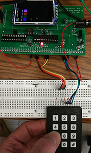
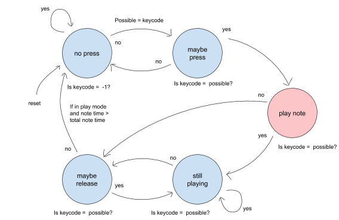

First, I would like to apologize for not having updated this blog in months. To be honest, I have had an incredibly busy semester where, for the first time, I was enrolled in primarily project classes. As one of may expect, I was spending long hours in the lab toiling away on my various projects, but nonetheless, this last semester has been the most fruitful for my education. In the upcoming days, I hope to highlight some of the projects I worked on this last semester. Specifically, I want to cover my design choices that seemed unique and useful to others in depth while providing a general overview of other implementation details. I would like to start with my work for ECE 4760: Designing with Microcontrollers, a cumulative design course where my and my two partners completed a series of three labs and a final design project using a PIC32 microcontroller.
This was the first time I had not worked with an ARM chip, but I came away pleasantly surprised with the capabilities of this chip. While I had heard good things about PIC microcontrollers in the past, I had heard that these chips were outdated in comparison to other embedded architecture. However, with the support of the well designed PLIB library, we were able to use the PIC32MX250F128B without issue. In addition, our professor, Bruce Land, had worked to incorporate protothreads with the PLIB library. So, for the entirety of the class we were able to use non-preemptive threading in our projects. Having this preemptive threading was really helpful when we wanted to spread apart the logic for our system among different threads without worrying too much about security and synchronization. However, we did have to ensure that various threads would terminate or yield for the other threads to have a chance at the CPU. For more information on the development board and the software we used, visit: http://people.ece.cornell.edu/land/courses/ece4760/ .

Picture by Bruce Land
Our first lab for the semester was designing a keyboard system that could play a series of eight pure tones or notes that were developed through FM synthesis. In addition, the keyboard could be used to record and playback up to 50 notes and play them back. The project was composed of two main components: implementing the keyboard functionality and developing the FM synthesis algorithm. The first thing we had to consider when incorporating the keypad with the PIC was the number of IO ports that the PIC had to spare. Unfortunately, this particular package of the PIC has a very limited set of pins which ultimately limits the number of GPIO pins available for use. Fortunately, the development board we had built for the class came with a port expander that provides an additional 16 GPIO pins. The PIC communicated with the port expander over an SPI bus at a rate of about one transaction per microsecond. So, the port expander would be more than fast enough to read and pass the button press to the PIC. The actual methodology we used for registering which button was pressed is quite complicated, but it is not much different from the many other similar methodologies (see: http://www.circuitbasics.com/how-to-set-up-a-keypad-on-an-arduino/). The other facet of registering keyboard input was debouncing the input to ensure no misfires were registered. To do that, we simply relied on a state machine embedded into our protothread to register each button press. The specific FSM we used for debouncing is shown below, and seems to work reliably enough.

Arguably the most complicated part of this project was generating sound using the DAC on the development board. Data was passed to the DAC over an SPI bus, and this development board used the same bus that the port expander was on. Therefore, either the port expander or the DAC can be used at once, but not both. We relied on Direct Digital Synthesis (DDS) to generate the sound and we relied on timer interrupts to specify when to send data to the DAC. For this project, we wanted to generate a clean sound sample, so we relied on a relatively high sampling rate of 40 kHz. The PIC was run at a clock rate of 40 MHz, so we used a timer period of around a 1,000 clock cycles. Therefore, whenever the timer interrupt is generated, we have at most around 1,000 clock cycles to exit out of the interrupt handler. Assuming overhead like entering and exiting the interrupt handler, we were reduced to only about 700 clock cycles to pass data along to the DAC. Because 700 clock cycles are not enough to use any complicated instructions like sin() or to rely on floating point values, we had to resort to other ways of generating our digital samples to send to the DAC. Our design used a sine lookup table that we generate at the start of the program for a series of 256 sin values between 0 and two*pi. Within our interrupt handler, we loop through this lookup table at different rates corresponding to different frequencies by varying the rate at which we increment the array index. Finally, we relied on the _Accum data types to use fixed point arithmetic as opposed to floating point architecture. We primarily relied on _Accum when performing FM synthesis in the timer interrupt handler, but the use of fixed point data types overall greatly reduced the computing load on the PIC processor.